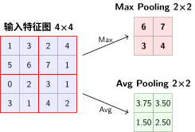
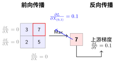

卷积：发现装备#
发现装备——局部感受野 + 权值共享，顺应山体结构。
全连接用的是攀岩的思路——每一块岩石亲手检查，不靠地形判断。结果：235,000 个参数，爬一座 28×28 的小山还吃力。
CNN 换了登山的视角。它相信：相邻的岩石是连在一起的，同一段岩壁在不同位置结构相似。这两个信念——局部感受野和权值共享——就是冰镐和绳索。
参数效率：攀岩 vs 登山#
架构 |
参数量 |
MNIST准确率 |
归纳偏置 |
参数效率 |
|---|---|---|---|---|
全连接 |
~235K |
~98% |
弱 |
低 |
CNN |
~60K |
~99% |
局部性+平移不变性 |
高 |
关键问题：CNN如何用1/4的参数达到更好的效果？
答案就在它的归纳偏置设计中：
局部感受野：3×3卷积核只看相邻9个像素，而非全部784个
权值共享：同一个卷积核滑过整张图像，参数重复使用
这正是我们在归纳偏置中讨论的核心概念——CNN将"图像是二维的"、"相邻像素相关"这些先验知识内置到架构中。
感受野#
感受野（Receptive Field） 是理解 CNN 最重要的概念之一。它定义为输出特征图上的一个神经元对应到输入图像上的区域大小。简单说：一个神经元"看到"了输入图像上多大一个区域。
第1层卷积：\(3 \times 3\) 卷积核，感受野 = \(3 \times 3\)（只看相邻像素）
第2层卷积：堆叠两个 \(3 \times 3\)，感受野 = \(5 \times 5\)（看到更广的区域）
第3层卷积：堆叠三个 \(3 \times 3\)，感受野 = \(7 \times 7\)
递推公式：感受野 = 前一层感受野 + (卷积核大小 - 1) × 累积步长
感受野随着网络深度线性增长。这也是为什么需要深层网络——层数越多，每个神经元能捕获的上下文信息越丰富。但标准 CNN 有一个限制：训练完成后，感受野对所有输入是固定的——无论输入是猫还是汽车，每个神经元都看到同样大小的区域。
卷积操作的基本原理#
卷积操作是CNN的核心，它通过滑动窗口的方式在输入图像上应用（通过点积）滤波器（卷积核）来提取特征。这种思想最早由LeCun等人在1989年提出 [LBD+89]，并在后续的LeNet-5工作中 [LBBH98] 得到完善。

卷积操作示意图#
备注
卷积操作的数学定义
在离散图像处理中，卷积操作可以表示为：
其中：
\(X\)：输入特征图
\(K\)：卷积核（滤波器）
\(b\)：偏置项
\(k\)：卷积核大小
直觉：卷积核为什么能提取特征？#
卷积核提取特征的原理其实很直观：点积 = 相似度度量。
回想一下两个向量的点积：\(\mathbf{a} \cdot \mathbf{b} = \sum_i a_i b_i\)。当两个向量方向一致时，点积最大；方向相反时，点积为负。换句话说，点积衡量了两个向量的相似程度。
卷积操作就是反复做点积：

卷积核=模式匹配器
这个 3×3 的卷积核左边全是 -1、中间是 0、右边全是 1——它检测的是垂直边缘：
当图像局部区域的左边暗、右边亮（如 \(\begin{bmatrix}0 & 0 & 1\\0 & 0 & 1\\0 & 0 & 1\end{bmatrix}\)），点积结果是正数（上图结果是 3），说明"这里有垂直边缘"
如果图像区域是均匀的（如全是 0），点积结果是 0，说明"这里没有边缘"
如果左边亮右边暗，点积结果是负数，说明"这里有反方向的边缘"
不同的卷积核检测不同的模式：
卷积核 |
检测的特征 |
示例数值 |
响应条件 |
|---|---|---|---|
垂直边缘 |
左右亮度突变 |
\(\begin{bmatrix}-1 & 0 & 1\\-1 & 0 & 1\\-1 & 0 & 1\end{bmatrix}\) |
左暗右亮 → 正响应 |
水平边缘 |
上下亮度突变 |
\(\begin{bmatrix}-1 & -1 & -1\\0 & 0 & 0\\1 & 1 & 1\end{bmatrix}\) |
上暗下亮 → 正响应 |
角点检测 |
对角线变化 |
对角线模式 |
特定方向变化 |
纹理检测 |
重复的局部图案 |
训练得到 |
匹配特定纹理 |
训练过程中，卷积核的数值通过反向传播自动调整——网络自己"学会"了要检测什么特征。浅层学边缘、深层学语义，这就是 归纳偏置 中讨论的层次特征提取。
简单来说，卷积操作就是拿着一个个"模板"（卷积核）在图像上滑动，在每个位置计算模板和该区域的相似度。相似的区域得到高响应，不相似的得到低响应。32 个卷积核就是 32 个不同的模板，各自关注不同的模式。
特征图尺寸计算#
对于输入尺寸为 \(W \times H\)，卷积核大小为 \(K \times K\)，步长为 \(S\)，填充为 \(P\) 的情况，输出特征图的尺寸为：
MNIST实例计算
对于28×28的MNIST图像，使用3×3卷积核，步长S=1，填充P=1：
输出宽度：\(W_{out} = \lfloor \frac{28 - 3 + 2 \times 1}{1} \rfloor + 1 = 28\)
输出高度：\(H_{out} = \lfloor \frac{28 - 3 + 2 \times 1}{1} \rfloor + 1 = 28\)
结论：输出特征图尺寸保持28×28不变
如果使用2×2池化，步长S=2，无填充P=0：
输出尺寸：\(W_{out} = \lfloor \frac{28 - 2 + 0}{2} \rfloor + 1 = 14\)
结论：池化将特征图尺寸减半
参数共享机制#
卷积层的一个重要特性是参数共享。同一个卷积核在图像的不同位置重复使用，这大大减少了参数数量。

参数共享机制示意图#
对于 \(C_{\text{out}}\) 个输出通道，每个通道使用独立的卷积核：
其中 \(C_{in}\) 是输入通道数。
以MNIST为例（单通道输入，32个3×3卷积核）：
相比全连接层的数万参数，卷积层的参数数量显著减少了99%以上。
卷积层的优势#
卷积层的核心优势
局部连接：每个神经元只连接输入图像的局部区域
权值共享：同一卷积核在整个图像上滑动，大幅减少参数
平移不变性：相同特征在不同位置被同一卷积核检测
层次特征提取：浅层提取边缘等低级特征，深层提取语义等高级特征
池化层#
直觉理解#
感受野告诉我们，卷积层通过堆叠来逐步扩大感受野。但有一个问题：如果只用卷积堆叠，特征图的空间尺寸始终不变（比如28×28），后面的全连接层要处理的参数量会非常庞大。
我们需要一种"压缩"机制——在保留关键特征的同时，减小空间尺寸。
池化层就是CNN的"压缩包"：
最大池化（Max Pooling）：保留最显著的特征，丢弃细节。就像做摘要：只记最重要的论点
平均池化（Average Pooling）：保留整体信息，平滑噪声。就像取平均成绩，反映整体水平
图解：池化怎么压缩特征图#

2×2池化操作示意
Max Pooling：每个2×2窗口只保留最大值——这代表该区域最强的特征响应。原来4×4=16个数字，压缩后只剩4个。
Avg Pooling：每个2×2窗口取平均值——保留了该区域的整体信息强度。
为什么Max Pooling更常用？#
在实际CNN中，Max Pooling远比Avg Pooling常用，原因与归纳偏置有关：
卷积层学出的特征响应本身就是"这个位置有没有检测到某个模式"
Max Pooling保留的是最强的检测信号，丢弃了"这个模式在这个区域不是最强位置"
这个过程本质上是一种软性平移不变性：只要特征出现在窗口内某个位置，Max Pooling就能捕获它
Max Pooling的直觉
想象你在一张照片里找猫。Max Pooling的操作是：把照片分成2×2的小格子，每个格子里只保留最像猫的证据（最高响应），丢掉其他像素。这样无论猫出现在格子的哪个位置，你都能找到它——这就是平移不变性的直觉来源。
数学定义#
对于输入特征图 \(X \in \mathbb{R}^{C \times H \times W}\)，池化操作在每个通道上独立进行，不改变通道数：
最大池化：
平均池化：
其中 \(\mathcal{R}_{ij}\) 是输出位置\((i,j)\)对应的输入区域（如2×2窗口）。
池化与卷积的关键区别
池化操作没有可学习参数，它的计算是固定的（取最大值或平均值）。这意味着：
池化不会增加模型的表达能力
但池化能有效减少计算量（空间尺寸减半 = 计算量减半）
池化层在反向传播时，梯度直接通过最大值位置回传，无需更新权重
池化层尺寸计算#
池化层的尺寸计算公式与卷积层一致：
其中 \(K\) 是池化窗口大小，\(S\) 是步长，\(P\) 是填充。最常用配置是 \(K=2, S=2, P=0\)，此时输出尺寸恰好减半：
PyTorch实现#
import torch.nn as nn
# 最常用：2×2最大池化，步长=2
# 每次调用，空间尺寸减半，通道数不变
pool = nn.MaxPool2d(kernel_size=2, stride=2)
# 输入：batch_size × channels × height × width
x = torch.randn(1, 32, 28, 28) # 32通道，28×28
y = pool(x)
print(y.shape) # torch.Size([1, 32, 14, 14]) —— 32通道不变，空间减半
# 平均池化
avg_pool = nn.AvgPool2d(kernel_size=2, stride=2)
# 自适应池化：输入可变，输出固定尺寸
# 这在 ResNet 中用于替代全连接层，称为全局平均池化（GAP）
# 见本文后续"池化选型指南"表格中的说明
adaptive_pool = nn.AdaptiveAvgPool2d((1, 1))
池化选型指南#
池化类型 |
PyTorch类 |
典型配置 |
输出特点 |
适用场景 |
|---|---|---|---|---|
最大池化 |
|
|
保留最强响应，空间减半 |
CNN卷积层后降维（LeNet/ResNet标准配置） |
平均池化 |
|
|
保留平均信息，空间减半 |
特征统计，轻量降维，辅助Max Pooling |
全局平均池化 |
|
输出固定1×1 |
无参数，完全压缩 |
替代FC层，大幅减少参数，见ResNet：高原反应补给站 |
自适应池化 |
|
输出固定H×W |
输入可变，输出固定 |
多尺度输入、部署时输入尺寸不固定 |
全局平均池化（GAP）：ResNet的标志设计
全局平均池化将整个特征图压缩成1个数字（每个通道取平均），然后直接接分类层。这避免了全连接层的巨大参数量。在ResNet：高原反应补给站中，我们将看到ResNet如何用GAP替代传统FC层，使网络参数减少90%以上。
这种设计体现了CNN的另一种归纳偏置：特征的空间位置信息在深层已不重要，重要的是每个通道的整体激活强度——这与归纳偏置中讨论的"层次特征提取"一脉相承。
反向传播中的梯度流动#
池化层没有可学习参数，但梯度仍然需要通过它回传。反向传播的规则很简单：
Max Pooling：梯度只回传给最大值所在位置，其他位置梯度为0
Average Pooling：梯度均匀回传给窗口内的所有位置

Max Pooling 反向传播示意
这个机制在后面讨论梯度消失（Vanishing Gradient）时会再次出现——Max Pooling的梯度"门控"特性，某种程度上帮助缓解了梯度在深层网络中的稀释问题。
验证实验#
import torch
import torch.nn as nn
# 创建一个简单的卷积+池化块
conv = nn.Conv2d(1, 32, kernel_size=3, padding=1) # 保持尺寸
pool = nn.MaxPool2d(2, 2)
x = torch.randn(1, 1, 28, 28)
print(f"输入尺寸: {x.shape}") # [1, 1, 28, 28]
x = conv(x)
print(f"卷积后: {x.shape}") # [1, 32, 28, 28] —— 尺寸不变（padding=1）
x = pool(x)
print(f"池化后: {x.shape}") # [1, 32, 14, 14] —— 空间减半，通道不变
x = pool(x)
print(f"再池化: {x.shape}") # [1, 32, 7, 7] —— 继续减半
# 参数量对比：有无池化
# 无池化：fc_input = 32 × 28 × 28 = 25,088 → fc1(25088, 128) = 3,211,264 参数
# 有池化：fc_input = 32 × 7 × 7 = 1,568 → fc1(1568, 128) = 200,832 参数
# 池化减少全连接层参数约94%！
一句话总结：池化层是CNN的"空间压缩器"——它不学习任何参数，但通过下采样让后续层的计算量大幅减少，同时通过取最大值提供了一种软性的平移不变性。
PyTorch实现CNN#
import torch
import torch.nn as nn
import torch.nn.functional as F
class SimpleCNN(nn.Module):
def __init__(self, num_classes=10):
super(SimpleCNN, self).__init__()
# 第一个卷积块：1 -> 32通道
self.conv1 = nn.Conv2d(1, 32, kernel_size=3, padding=1)
self.bn1 = nn.BatchNorm2d(32)
# 第二个卷积块：32 -> 64通道
self.conv2 = nn.Conv2d(32, 64, kernel_size=3, padding=1)
self.bn2 = nn.BatchNorm2d(64)
# 池化层（见{ref}`pooling`）
self.pool = nn.MaxPool2d(2, 2)
# 全连接层
self.fc1 = nn.Linear(64 * 7 * 7, 128)
self.fc2 = nn.Linear(128, num_classes)
self.dropout = nn.Dropout(0.5)
def forward(self, x):
# 第一个卷积块：28x28 -> 14x14
# conv1: 输入1通道，输出32通道，3x3卷积核，参数量32*(3*3*1+1)=320
x = self.conv1(x) # {ref}`computational-graph`中的卷积节点
x = self.bn1(x) # 批归一化 {cite}`ioffe2015batch`，稳定训练
x = F.relu(x) # 非线性激活（见{ref}`activation-functions`）
x = self.pool(x) # 下采样：28x28 -> 14x14
# 第二个卷积块：14x14 -> 7x7
# conv2: 输入32通道，输出64通道，参数量64*(3*3*32+1)=18,496
x = self.conv2(x)
x = self.bn2(x)
x = F.relu(x)
x = self.pool(x) # 14x14 -> 7x7
# 展平：64通道 × 7x7 = 3,136维向量
# 对比全连接：直接从784展平，CNN先提取特征再展平
x = x.view(x.size(0), -1)
# 全连接层：3,136 -> 128 -> 10
x = self.fc1(x)
x = F.relu(x)
x = self.dropout(x) # 正则化，防止过拟合
x = self.fc2(x) # 输出logits，CrossEntropyLoss内部Softmax
return x
def get_param_count(self):
"""计算各层参数数量，验证参数效率"""
conv1_params = 32 * (3*3*1 + 1) # 320
conv2_params = 64 * (3*3*32 + 1) # 18,496
fc1_params = 64*7*7 * 128 + 128 # 401,536
fc2_params = 128 * 10 + 10 # 1,290
total = conv1_params + conv2_params + fc1_params + fc2_params
return {
'conv1': conv1_params,
'conv2': conv2_params,
'fc1': fc1_params,
'fc2': fc2_params,
'total': total
}
# 模型实例化
model = SimpleCNN()
param_info = model.get_param_count()
print("=" * 50)
print("CNN参数效率分析")
print("=" * 50)
print(f"卷积层参数:")
print(f" Conv1 (32通道): {param_info['conv1']:,} 参数")
print(f" Conv2 (64通道): {param_info['conv2']:,} 参数")
print(f"全连接层参数:")
print(f" FC1 (128神经元): {param_info['fc1']:,} 参数")
print(f" FC2 (10类别): {param_info['fc2']:,} 参数")
print(f"-" * 50)
print(f"总参数数量: {param_info['total']:,}")
print(f"对比全连接: 235,146 参数")
print(f"参数减少: {235146 - param_info['total']:,} ({(1 - param_info['total']/235146)*100:.1f}%)")
print("=" * 50)
特征图：CNN的"眼睛"#
每层卷积都在学习什么？通过可视化特征图，我们可以"看到"CNN的感知过程：
层级 |
特征图内容 |
人类可理解性 |
作用 |
|---|---|---|---|
Conv1 (32通道) |
边缘、纹理、颜色梯度 |
⭐⭐⭐ 高 |
像边缘检测器，识别笔画边界 |
Conv2 (64通道) |
笔画、弧线、角点 |
⭐⭐☆ 中 |
组合低级特征，识别数字部件 |
池化后 |
抽象的位置信息 |
⭐☆☆ 低 |
降维同时保留关键特征 |
FC层 |
数字类别的高层表示 |
⭐☆☆ 低 |
完全抽象，人类难以理解 |

CNN分层特征提取示意
分层学习的启示：
CNN自动学习从简单到复杂的特征层次，无需人工设计
这与人类视觉系统类似：视网膜→边缘检测→形状识别→物体认知
全连接网络没有这种层次结构，必须同时学习所有复杂度
CNN的优缺点#
优点 |
缺点 |
|---|---|
保留空间结构信息 |
实现相对复杂 |
参数数量少 |
超参数选择敏感 |
平移不变性 |
计算复杂度高 |
局部连接 |
需要更多内存 |
分层特征提取 |
训练时间较长 |
从全连接到卷积的演进
卷积神经网络的设计直接针对全连接网络的局限性：
参数爆炸 → 参数共享大幅减少参数
空间信息丢失 → 局部连接保留空间结构
平移不变性差 → 平移不变性提高泛化能力
计算效率低 → 分层特征提取提高计算效率
这种演进体现了深度学习架构设计中的归纳偏置思想：通过引入适合任务结构的先验知识，让模型更高效地学习。
装备有了。但出发前还有一件事——数据准备：打包行囊：打包行囊。数据不会自己飞到 GPU 上。
参考文献
Yann LeCun, Bernhard Boser, John S Denker, Donnie Henderson, Richard E Howard, Wayne Hubbard, and Lawrence D Jackel. Backpropagation applied to handwritten zip code recognition. Neural Computation, 1(4):541–551, 1989.
Yann LeCun, Léon Bottou, Yoshua Bengio, and Patrick Haffner. Gradient-based learning applied to document recognition. Proceedings of the IEEE, 86(11):2278–2324, 1998.
贡献者与修订历史
查看详细修订记录
-
dc35df22026-06-14 - Heyan Zhu: refactor: unify into two-chapter mountain-climbing narrative